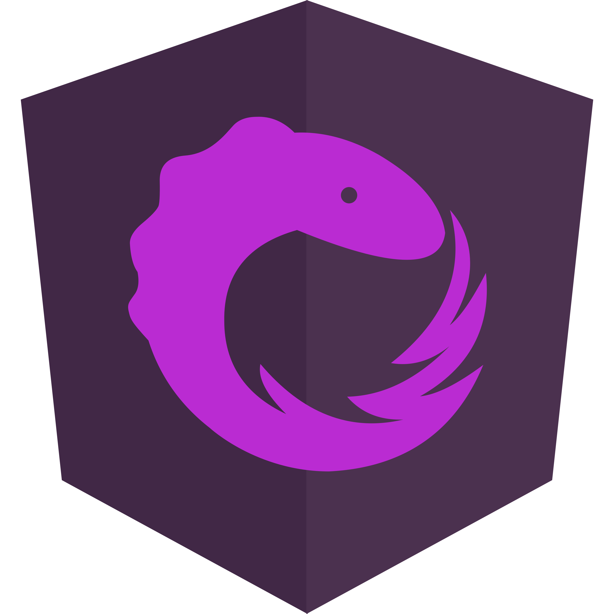
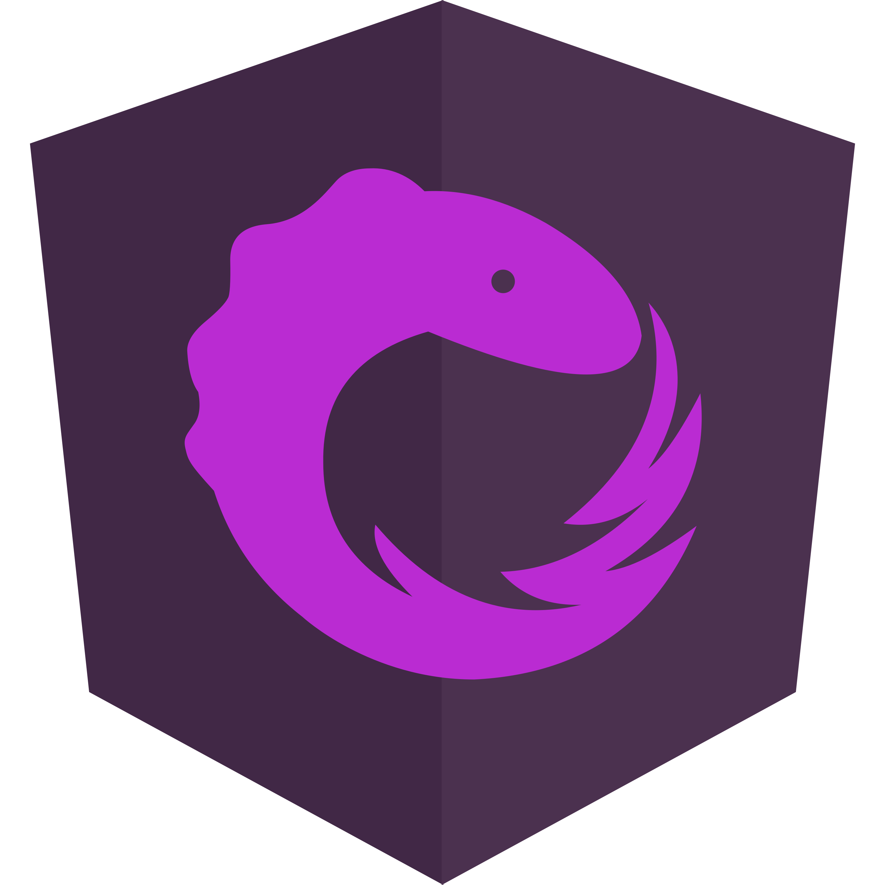
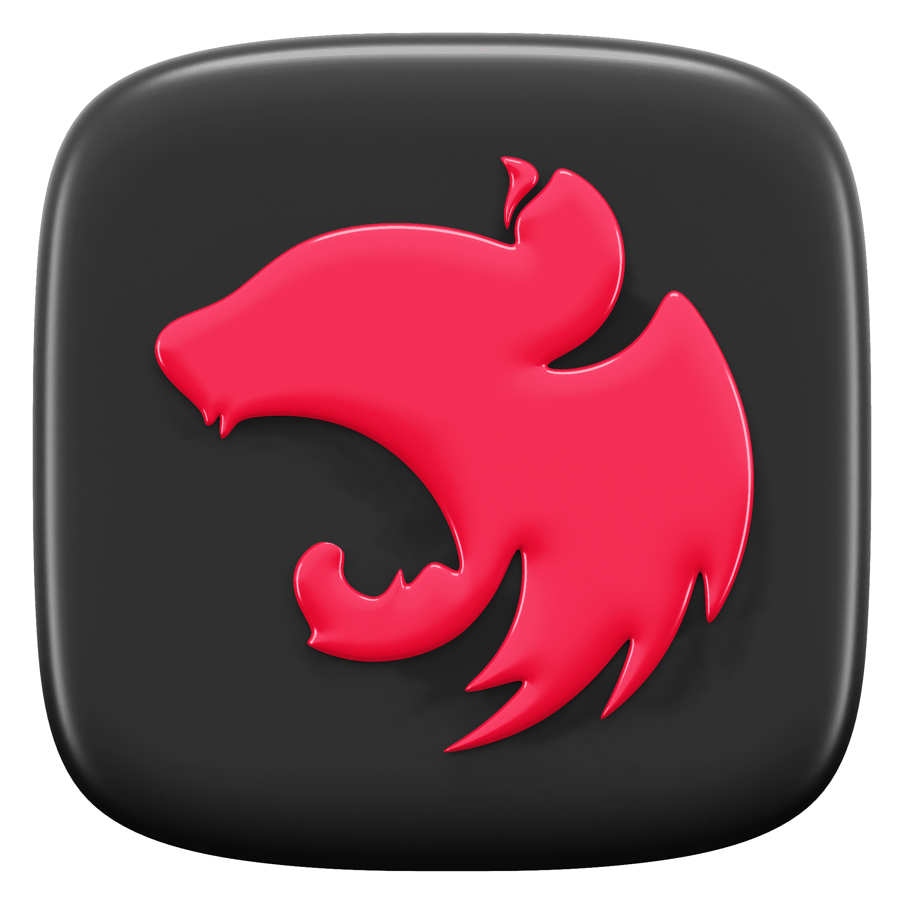
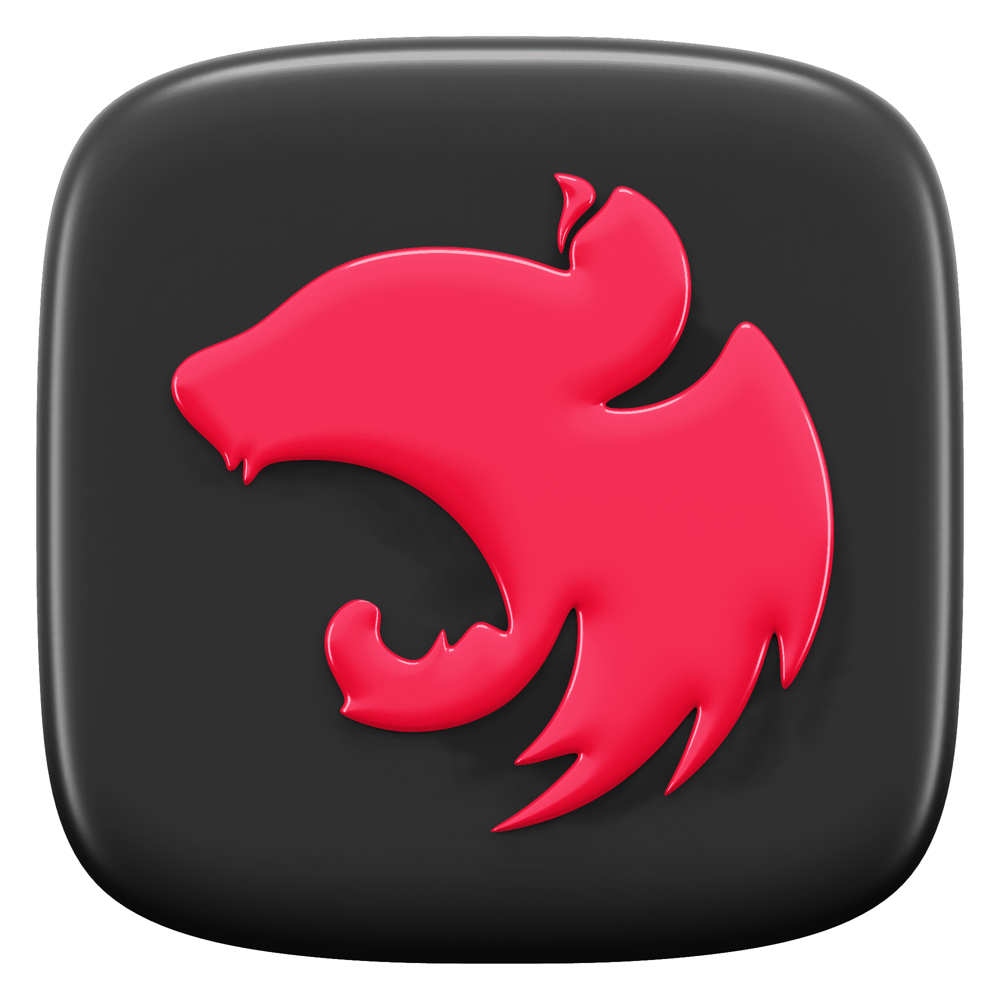

Me enorgullece decir que soy graduado de la Academia Técnica Militar de Venezuela con una licenciatura en Ciencias y Artes Militares, con mención en Informática. Esta formación no solo me brindó una base académica sólida, sino también habilidades de liderazgo, disciplina y determinación, que aplico en mi enfoque para abordar proyectos de desarrollo web.
Comencé mi viaje en el campo de las redes informáticas, donde adquirí valiosos conocimientos sobre la infraestructura tecnológica que sustenta nuestra vida digital. Mi tiempo en el campo de las redes me proporcionó una base sólida en la resolución de problemas y la comprensión de cómo funcionan los sistemas informáticos en conjunto.
Sin embargo, mi pasión por la creación y la innovación me llevó a explorar el emocionante ámbito del desarrollo web. Como autodidacta, me sumergí en el vasto universo del desarrollo web, explorando lenguajes, herramientas y tecnologías. Fue durante este proceso que me enamoré especialmente de Angular, una tecnología que me permitió combinar mi fascinación por la programación con mi deseo de crear experiencias digitales excepcionales.
Estoy emocionado por la evolución constante del mundo del desarrollo web y la forma en que la tecnología sigue transformando nuestra sociedad. Mi objetivo es seguir creciendo como profesional y mantenerme al tanto de las últimas tendencias y avances en el desarrollo web, brindando soluciones que impacten positivamente la vida de las personas.
MIS HERRAMIENTAS DE TRABAJO


 

 
